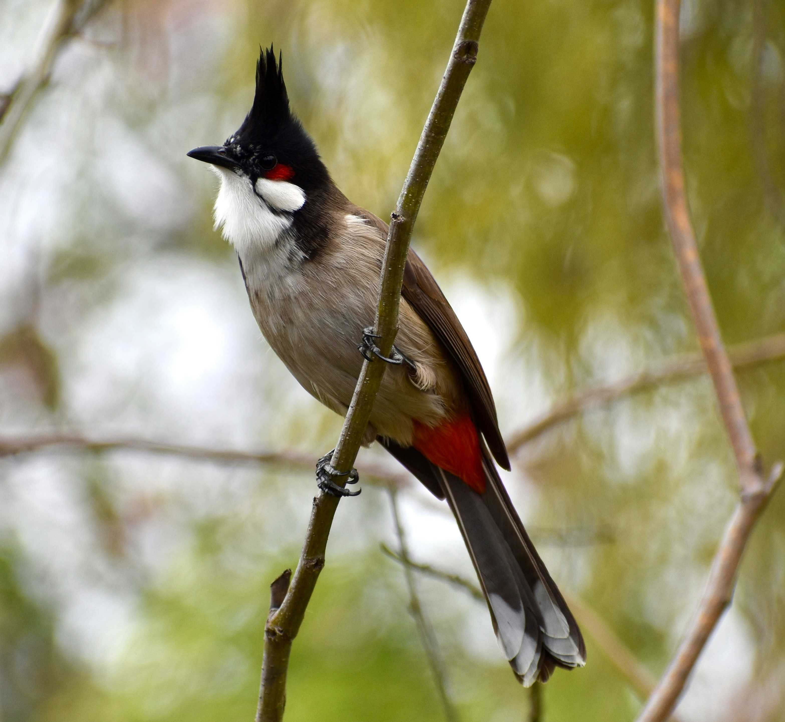

The Red-Whiskered Bulbul is an attractive crested bulbul with a black head, white cheek, red ear patch, brown back, and red vent. It is an energetic bird that feeds on fruit, nectar, and insects and is often found in gardens, forest edges, plantations, and scrub. Its pointed crest and red facial markings make it particularly distinctive. Compared with the similar Red-Vented Bulbul, it is distinguished by the combination of features described above. Its preference for gardens, scrub, woodland edges, plantations, and forests also helps separate it from species that use different habitats. Its characteristic behaviour, including active and social, often moving through vegetation in pairs or small groups, provides another useful field clue. Taken together, these differences make it easier to distinguish from similar species when the bird is seen clearly.